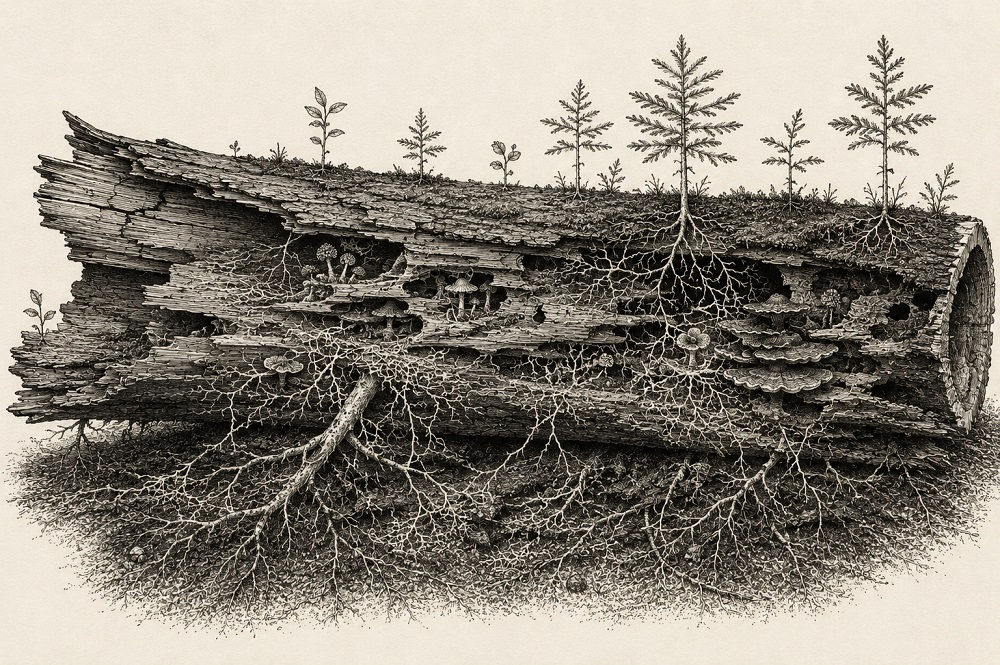

Home > Chronicles of a biblio-naturalist > Biomimesis in Action (05)
Biomimesis in Action (05)
The Forest Grows from Its Dead
Nurse logs and generative decomposition
The Fiction of Functional Life
Knowledge systems often judge their components by the work they continue to perform. A catalogue is valuable while it supports retrieval. A classification remains useful while it organizes description. A database justifies its maintenance by receiving new records and serving users. Once these structures cease performing their original function, they usually become historical artifacts: retained, perhaps, but no longer expected to contribute actively to the life of the institution.
This understanding appears reasonable because institutions must continually replace technologies, revise standards, migrate platforms, and reorganize collections. Not every structure can remain operational forever. Yet this way of thinking also narrows the meaning of persistence. It assumes that usefulness ends when original function ends.
Forests suggest a different possibility.
A living forest contains organisms at every stage of existence: seedlings, mature trees, standing dead trunks, fallen logs, decomposing branches, fungi, insects, mosses, and soils continually transformed by biological activity. These elements do not belong to separate ecological worlds. They participate simultaneously in the processes that allow the forest to persist.
Among them, few structures illustrate this more clearly than the nurse log.
A nurse log is not simply a dead tree left where it fell. It is wood whose ecological function has changed. The tree no longer grows, reproduces, or captures sunlight, yet its contribution to the forest has not ended. Through decomposition, it becomes the substrate from which other organisms establish themselves. Continuity depends not on extending the life of the tree, but on allowing its ecological role to change.
For knowledge systems, this raises an unfamiliar question. What happens after a structure has finished doing the work for which it was originally designed?
When Death Changes Function
A fallen tree does not immediately become a nurse log. During decomposition its physical and biological properties change continuously. Fungi penetrate the wood, insects excavate galleries, bacteria transform organic matter, mosses colonize the surface, and moisture accumulates within increasingly porous tissues. The trunk gradually loses the characteristics that once allowed it to stand as a tree while acquiring conditions that make it valuable in entirely different ways.
In many forests, seedlings establish successfully on these decaying logs because they provide a favorable environment unavailable on the surrounding ground. The wood retains moisture, releases nutrients gradually, moderates temperature, and often reduces competition from dense vegetation. The fallen trunk becomes habitat, water reservoir, nutrient source, and germination platform simultaneously.
The important point is not that dead wood remains present. Countless dead organisms disappear without playing such a role. What matters is that decomposition reorganizes relationships.
The tree has not been preserved. Neither has it vanished. Its material has entered another ecological function.
This differs fundamentally from storage. Storage attempts to maintain an object as it already exists. A nurse log becomes valuable precisely because it no longer exists in its original form. Transformation, rather than preservation, creates its ecological importance.
Substrate Instead of Infrastructure
Knowledge systems also produce structures whose function changes through time. Superseded classifications, obsolete metadata schemas, retired databases, discontinued software, field notebooks, migration documentation, decision logs, and earlier descriptive practices frequently lose operational authority while remaining institutionally significant.
They no longer organize the system. Instead, they explain it.
An obsolete classification may reveal why certain categories still exist. A deprecated vocabulary may document conceptual assumptions that later revisions attempted to correct. Migration records may preserve relationships simplified or eliminated by newer platforms. Earlier finding aids may explain arrangements that contemporary catalogues no longer make visible.
Their value has shifted from operation to interpretation.
This transition resembles the ecological role of the nurse log more closely than the familiar language of legacy systems. These documentary remains no longer support daily institutional activity, yet they continue sustaining later work by preserving explanatory relationships that would otherwise disappear.
Not every obsolete structure deserves indefinite preservation. Forests contain countless fallen branches that never become nurse logs. Likewise, institutions generate large quantities of documentation whose future value is negligible. The challenge is therefore not to retain everything, but to recognize which remains continue producing interpretive conditions for future work.
Designing for Generative Remains
Preservation usually concentrates on extending the operational life of systems. Less attention is given to preparing those systems for the moment when operation inevitably ends.
Yet every successful project eventually produces documentary remains. The question is whether those remains will become unintelligible residue or usable substrate.
This depends less on the quantity of documentation than on its capacity to explain decisions. Why were particular categories adopted? Which descriptive choices reflected technical limitations rather than conceptual ones? Which uncertainties remained unresolved? Which relationships disappeared during migration? Why were local terminologies replaced, retained, or modified?
When such information survives, later workers inherit more than finished products. They inherit the reasoning that shaped them.
Designing for afterlife therefore becomes part of preservation itself. Systems should not only anticipate migration, replacement, and revision. They should also anticipate the explanatory role their obsolete structures may eventually play.
What the Nurse Log Does Not Solve
The comparison has obvious limits. A decomposing tree carries no legal responsibilities, cultural restrictions, intellectual property rights, or ethical obligations. Documentary remains often do. Decisions about retaining obsolete systems cannot be borrowed directly from ecological processes.
Nor does decomposition automatically improve knowledge. Some legacy systems become incomprehensible. Others preserve harmful assumptions that should remain accessible as evidence without continuing to shape current practice. Still others consume resources disproportionate to their interpretive value.
The nurse log offers no rule for deciding what should be retained. It simply reminds us that usefulness does not always disappear when original function ends.
The Forest Grows from Its Dead
A forest does not preserve every tree. It allows some trees to become something different.
Their contribution continues not because they remain alive, but because decomposition creates conditions under which later growth becomes possible.
Knowledge systems may require a comparable way of thinking. Their continuity depends not only on preserving active structures, but also on recognizing when obsolete ones have entered another role. Some documentary remains no longer organize collections, platforms, or descriptions. Instead, they sustain understanding by preserving the paths through which those systems came into being.
The forest grows from its dead because continuity depends as much on transformation as on survival.
Knowledge systems may do the same.